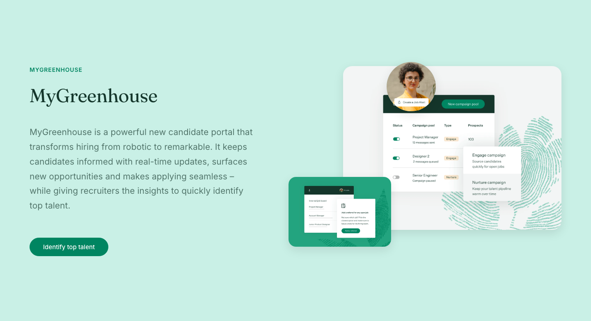

5 on-brand greenhouse-v2 variations. Structure selected from the RELUME structural recipe catalog; every colour, type ramp, pill button, surface, copy string and image is bound from the measured greenhouse-v2 brand facts.
feature-repeated-grid — repeated-grid / cards
Measured greenhouse feature grid: 3-up media-top cards with trailing links.
feature-content-media-split — content-media-split / split
Alternating media/content feature rows (order flips per row).
feature-tabs — tabs / cards
Tabbed feature switcher with a product-UI panel.

feature-media-collage — media-collage / collage
Single feature with a floating product-UI collage on mint.
feature-media-background — media-background / overlay
Inverse forest feature band with a 3-up icon-led feature set.